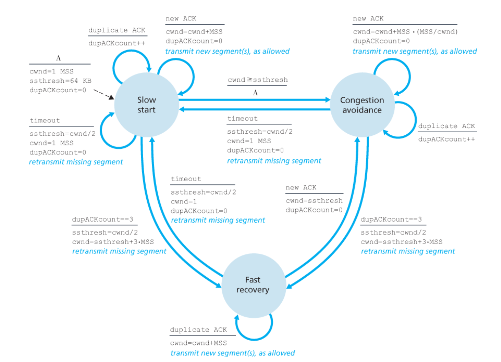

《Computer Networking - A Top-Down Approach》第三章(除3.4)复习知识点总结
3.1 传输层服务介绍
术语：
- 传输层 Transport Layer
- 传输层包 segment
传输层的意义：实现两个不同主机上的进程之间的逻辑通信(在这里，逻辑通信的意义是，即便两个主机之间需要多个路由器转发，从传输层的角度来看，就好像是点对点的直接传输一样)
3.1.1 传输层与网络层的关系
- 传输层服务构建于网络层服务之上
- 网络层服务遍布全网，传输层服务只存在于终端主机
- 一个网络层上，可以有多个传输层服务
- 传输层服务部分受限于网络层服务
- 例如，如果网络层不对带宽，传输时间做任何保证，传输层也无法提供保证
- 但是，虽然网络层(IP协议)不提供可靠传输，传输层(TCP协议)仍然可以提供可靠传输服务
3.1.2 传输层协议概览
因特网提供了两种传输层协议
UDP (User Datagram Protocal)
- 单纯的IP协议套壳
- 提供不同主机的进程到进程的通信服务
- 提供错误校验
TCP(Transmission Control Protocal)
- 复杂协议
- 提供不同主机的进程到进程的通信服务
- 提供错误校验
- 提供可靠传输服务
- 提供拥塞控制
3.2 多路复用和多路分解
多路复用：指的是源主机上的多个套接字发送的传输层包被整合到一起（不同的包还是不同的包，但是是由统一的传输层协议进行处理的），加传输层头部，而后交给网络层传输
多路分解：指的是目的主机上收到传输层包，将传输层的包发给对应的套接字
套接字的标识符：
套接字的标识符用于在多路分解中确定传输层包应该发送到哪一个套接字上
UDP套接字标识符：目的IP地址，目的端口号
TCP套接字标识符：源IP地址，源端口号，目的IP地址，目的端口号
也就是说，如果两个UDP包的源IP地址，源端口号不同，但是目的IP地址，目的端口号相同，它们就会被分配到同一个UDP套接字上，但是如果是TCP包，就会被分配到不同的套接字上。
这是因为UDP是无连接的，也就是说，在UDP的眼里，只有包包包，不在乎是谁发来的，但是TCP是面向连接的，和不同的源建立了不同的连接，所以这些包也就要放到不同的套接字上处理。
3.3 无连接的传输层协议UDP
UDP只完成了最基本的传输层协议工作，也就是多路复用和多路分解，错误校验。
仍然有应用使用UDP的原因：
- 可以更好地控制包发出的时间，以及发包内容。由于没有拥塞控制，UDP接到应用层数据后立刻会发包，而无需通过重传进行可靠通信使得UDP不会传输除了应用数据以外的其他数据
- 没有连接建立的时延
- 无需维护连接状态，所以可以有更多的客户连接到同一个UDP服务器上
- UDP包的额外域更少，开销低
虽然很多时候说多媒体不在意少量的数据丢失，可以使用UDP，但是由于UDP缺少拥塞控制，多媒体文件体积庞大，所以使用UDP传输多媒体并不是一个好主意。
3.3.1 UDP包格式
包含了（顺序未必正确）：源端口，目的端口，包长度（包头+数据），校验和，应用数据
3.3.2 UDP包校验和
将所有16-bit的小段当作数加起来，当有溢出进位时，就抛弃溢出进位，额外加1，所得结果取反。
1 | 0110011001100000 |
最后一次加法有溢出，额外加了1
3.5 面向链接的传输：TCP
3.5.1 TCP 连接
TCP连接的特点：
- 逻辑连接。TCP连接是一个逻辑概念，不是一个类似于电路交换网络中的连接一样，有预先分配的资源的真实存在的连接。
- 终端的连接。TCP连接只在终端主机上有概念，网络之中的路由器，交换机等对TCP连接毫无感知，只知道收发包。
- 点对点的连接。只有单播，没有组播。
- 双工连接。TCP连接的双方可以同时读写。
TCP连接建立简介（主动发起连接的是客户进程，被动监听接受的是服务器进程）：
- 客户进程向服务器发送一个特殊的TCP包
- 服务器进程向客户进程回复一个特殊的TCP包
- 客户进程向服务器进程再回复一个特殊的TCP包
- 1和2中的TCP包没有负载，3中的可能有
TCP连接上传输数据的方式（两端都有发送缓冲区和接收缓冲区）：
- 应用进程拥有想要发送的数据，将数据传给套接字
- 套接字将数据传给TCP传输层
- TCP将数据存放在发送缓冲区中，在适当的时候发送（标准没有规定什么时候是适当的时候）
- 另一端TCP接收到数据，将数据存放在接收缓冲区中
- TCP将接受缓冲剧的数据传给对应的套接字，套接字传给应用
3.5.2 TCP包结构
TCP包包含了如下域：
- 源端口号，目的端口号
- 32-bit序列号和32-bit确认号
- 16-bit接受窗口
- 4-bit头部长度
- 可选域
- 标志域
- 数据
- 校验和
其中：
- 32-bit序列号是当前TCP包中的数据的第一个字节的标号（注意不是包的标号，如果没有数据，序列号也需要再前一个包的最后一个字节标号基础上+1）
- 32-bit确认号是期盼得到的下一个字节的标号
3.5.3 往返时间估计和超时计算
想要估计往返时间，首先要估计一个发出的包的往返时间，但是，因为TCP会存在发出了多个包，但是都没有确认的情况，这时，TCP不会对所有没有确认的包都记录往返时间，只会选择一个包记录。
同时，如果一个包被重传了，TCP也不会记录它的往返时间（因为可能该包并没有丢失，只是ACK到的晚了，那么再收到的ACK就不清楚是原来的包的ACK，还是重传的包的ACK了）
通过一个包取样的往返时间$SampleRTT$和之前估计的$EstimatedRTT_{n-1}$得到新的$EstimatedRTT_{n}$的公式是
$EstimatedRTT_{n}=(1-\alpha)EstimatedRTT_{n-1} + \alpha SampleRTT$
官方建议$\alpha$取$1/8$
同时，我们可以用如下公式来反映网络连接的抖动程度：
$DevRTT=(1-\beta)DevRTT+\beta(|SampleRTT-EstimatedRTT|)$
官方建议$\beta$取$1/4$
一般来说超时区间$TimeoutInterval$取：
$TimeoutInterval=EstimatedRTT+4DevRTT$
同时，一旦出现了超时重传，那么$TimeoutInterval$会立刻乘2（这是因为阻塞控制，如果超时，很可能是因为线路阻塞，如果一直以同一个时间段重传，可能会使得阻塞更严重，乘2可以传的越来越慢）
一旦下一个ACK到来，就会立刻以原来的公式更新$TimeoutInterval$
3.5.4 可靠传输
关于计时器
概念上来讲，如果认为每个包都有一个计时器，更加容易思考，但是由于这样做的开销太大，实际的TCP协议只会维护一个超时重传计时器。
两步保障可靠传输
可以从两步来描述TCP提供的可靠传输机制
- 超时重传
- 重复确认的迅速重传
超时重传
假设TCP的流控制和阻塞控制都不起作用，应用层数据大小不超过TCP负载的大小，数据传输是单向的情况下，给出一个简易的超时重传发送方：
1 | 下一序列号初始化 |
注意：TCP协议使用累积确认的方法，也就是说，如果确认号是Y，就意味着所有序列号小于Y的包都收到了。
超时乘2
一旦出现了超时重传，那么$TimeoutInterval$会立刻乘2（这是因为阻塞控制，如果超时，很可能是因为线路阻塞，如果一直以同一个时间段重传，可能会使得阻塞更严重，乘2可以传的越来越慢）
一旦下一个ACK到来，就会立刻以原来的公式更新$TimeoutInterval$
快速重传
接收者的ACK生成机制
| 事件 | TCP接收者行为 |
|---|---|
| 按序到达的包 | 等待500ms，希望出现下一个序列号的包 |
| 按序到达的包，已经有一个包等待发出ACK | 立刻发出累计ACK包 |
| 非按序到达的包，序列号高于期待序列号，孔雀产生 | 发出重复ACK包 |
| 非按序到达的包，部分或全部填补空缺 | 发出最低连续已收到包的序列号的ACK包 |
所以我们可以修正一下之前的简易发送方：
1 | 收到确认包，确认号Y: |
Go-Back-N or Selective-Repeat
都是，组合起来的，保有N个未确认的包像是GBN，但是接收方累计确认并缓存失序到达的大序列号的包，最终导致重传包的数量较少像是SR
3.5.5 流控制
TCP的流控制是通过滑动窗口来实现的。
TCP接收方维护如下几个变量：
- 接收缓冲区大小RcvBuffer
- 最后一个被应用程序读取的字节的序列号LastByteRead
- 最后一个接收到的字节的序列号LastByteRcvd
而接收方希望 $LastByteRcvd-LastByteRead\le RcvBuffer$，所以窗口的大小就是 $rwnd=RcvBuffer - [LastBYteRcvd-LastByteRead]$。接收方通过在TCP包头的window域告知发送方rwnd的数值。
TCP发送方维护如下几个变量：
- 最后一个发送的字节序列号LastByteSent
- 最后一个被确认的字节序列号LastByteAcked
- 接收方窗口大小rwnd
发送方需要保证$LastByteSent−LastByteAcked\le rwnd$.
小问题
如果接收方窗口大小暂时变为0，那么发送方会收到rwnd为0的消息，而后就不再通信，两边就有可能永久阻塞。
所以TCP规定即便接受窗口为0，发送方也要向接收方发送负载为一个字节的包。以便后续接受窗口大小变更时可以及时收到消息。
TCP 连接管理
TCP建立连接：
- SYN(w) a $\rightarrow$ b
- SYN(u),ACK(w+1) b $\rightarrow$ a
- ACK(u+1)，这个ACK包已经可以带应用层数据了 a $\rightarrow$ b
TCP关闭连接：
- FIN a $\rightarrow$ b
- ACK b $\rightarrow$ a
- FIN b $\rightarrow$ a
- ACK a $\rightarrow$ b
当客户机向一个IP地址正确但是端口号不正确的地址发送SYN时，服务器会回复RST包。
3.6 拥塞控制原理
3.6.1 拥塞的原因和代价
情境一
情境：两个终端主机，一个发一个收，一个无限缓存的路由器
如果发送方发送的速度超过了链路上能够传输的最大速率，那么在路由器上就会出现大量的缓存，缓存中的包越来越多，其排队等待的时间就越长。
代价：当发送速率接近链路传输速率时，排队延迟迅速变大。
情境二
情境：两个终端主机，一个有限缓存的路由器
如果发送方的发送速度过快，路由器的缓存就会被充满，那么路由器就必须丢包，一旦丢包，发送方就必须重传。同时，如果有包延时过长，使得发送方以为该包丢失了，重传的工作就是完全的浪费。
代价：
- 当发送速率变高，发送方必须重传来弥补线路上丢包的事实
- 同时还会因为延时过长的“伪丢包”情境而做无谓的重传
情境三
情境：四个终端主机，有限缓存的路由器，多跳线路
如果发送过快导致网络中出现拥塞，那么在一个多跳线路上，一旦某个包在第N跳被丢弃，那么前N-1跳上的路由器，交换机等做的工作就相当于全部白费了。
代价：上游的路由器为了将包传输到当前位置提供的传输能力由于包被丢弃而全部浪费
3.6.2 拥塞控制的解决方案
- 端到端的拥塞控制。端到端的拥塞控制不依赖中间层的线路，通过在终端上自己检测推断线路网络的拥塞状况，进行对应的控制。
- 网络辅助的拥塞控制。网络辅助的拥塞控制中，底层的网络线路会显式地通知终端线路网络的拥塞状况。
3.7 TCP 拥塞控制
类似于流控制中的receive window，为了拥塞控制中控制发送方的发送速率，TCP维护一个congestion window(cwnd)。所以我们现在有如下的关系。
$LastByteSent−LastByteAcked\le \min{cwnd, rwnd}$
但是就讨论中，方便起见，我们先不考虑rwnd。
那么TCP现在需要回答如下几个问题：
- 如何检测出拥塞或者不拥塞的情况？
- 在检测出情况后，如何调整congestion window的大小来控制传输速度？
TCP检测拥塞状况的方式
由于线路拥塞的最重要结果就是丢包，而丢包又和可靠传输有着紧密的联系，所以TCP使用了实现可靠传输中的机制来检测拥塞状况。
| 行为 | 推断 |
|---|---|
| 超时 | 拥塞严重 |
| 重复ACK | 拥塞，不是很严重 |
| 正常ACK | 无拥塞 |
TCP在检测到拥塞/正常后的行为
TCP在检测到拥塞或者不拥塞后的行为遵守如下的指导原则：
- 一旦检测到拥塞(丢包)，就有必要减少传输速率
- 一旦检测到无拥塞，就可以增加传输速率
- 带宽侦测，TCP需要找一种高效而比较安全的方法来侦测当前线路可以接受的传输速率是多少，既要快，否则线路利用率不高，也要适当慢一点，否则一下子就导致了拥塞
针对这些，TCP有如下的模式：
- Slow Start
- Congestion Avoidance
- Fast Recovery
他们之间的转换关系如下：

下面介绍一下这几个模式的设立目的和比较重要的转换条件
Slow Start(慢开始)
在TCP连接建立的时候，cwnd被初始化为1MSS，随后一旦接受到一个ACK，就将cwnd增加1MSS，这就导致一个RTT内，cwnd会翻一倍。
这样的一个指数级增长的cwnd被用在建立TCP连接之后，迅速检测到当前线路能够接受的传输速率。
Congestion Avoidance (拥塞避免)
进入Congestion Avoidance的时候，一般cwnd的大小是上一次检测到拥塞时的cwnd的一半。
这时在一个RTT内，如果收到了全部发出包的ACK，那么一个RTT，cwnd增加1MSS。
这种方式用在这个时候很合适，虽然线路仍然正常无拥塞，但是任何的cwnd的增长都有可能使得线路变为拥塞状态，所以采用一种较为缓慢谨慎的方式来侦测线路的带宽。
Fast Recovery (快速恢复)
Fast Recovery是在检测到3个重复的ACK包时进入的模式，该模式下，每收到一个重复的ACK包，cwnd的大小就增加1MSS，这点和Slow Start没有区别，因为收到重复的ACK包也表示有正常的包被正常接受到了。一旦接收到新的ACK包，就转换到Congestion Avoidance模式。
两种不同的TCP
早期的TCP，TCP Tahoe，没有Fast Recovery模式，无论受到什么样的拥塞信息，超时或者重复ACK，都直接将cwnd置为1且进入Slow Start模式。
后来TCP Reno加入了Fast Recovery的支持。